전기산업기사 (2006-03-05 기출문제)
1과목: 전기자기학
1. 그림과 같이 공기중에서 1[m]의 거리를 사이에 둔 2점 A, B에 각각 3×10-4[WB]와 -3×10-4[WB]의 점자극을 두었다. 이 때 점 P에 단위 정(+)자극을 두었을 때 이 극에 작용하는 힘의 합력은 약 몇 [N]인가? (단,
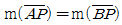
, m(∠APB)=90°이다.)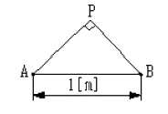
- 0
- 18.9
- 37.9
- 53.7
(정답률: 42%)

2. 압전기 진동자로 가장 많이 이용되는 재료는?
- 로셀염
- 실리콘
- 방해석
- 페라이트
(정답률: 60%)
3. 권선수가 N 회인 코일에 전류 I[A]를 흘릴 경우, 코일에 ø[Wb]의 자속이 지나간다면 이 코일에 저장된 자계 에너지는 어떻게 표현되는가?
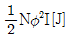
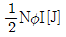
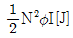
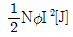
(정답률: 67%)
4. 사용되는 전자파의 파장이 가장 긴 것부터 순서대로 나열한 것은?
- 전자레인지-살균소독-사진전송-레이다
- 레이다-사진전송-살균소독-전자렌지
- 사진전송-레이다-전자렌지-살균소독
- 전자렌지-살균소독-레이다-사진전송
(정답률: 39%)
5. 길이 1[cm] 마다 권수 50을 가진 무한장 솔레노이드에 500[mA]의 전류를 흘릴 때 내부자계는 몇 [AT/m]인가?
- 1,250
- 2,500
- 12,500
- 25,000
(정답률: 65%)
6. 내부저항 20[Ω] 및 25[Ω], 최대 지시눈금이 다 같이 1[A]인 전류계 A1및 A2를 그림과 같이 접속했을 때 측정할 수 있는 최대 전류의 값은 몇 [A]인가?
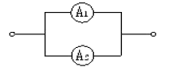
- 1
- 1.5
- 1.8
- 2
(정답률: 32%)
7. 유전체내의 전속밀도에 관한 설명 중 옳은 것은?
- 진전하만이다.
- 분극전하만이다.
- 겉보기 전하만이다.
- 진전하와 분극전하이다.
(정답률: 69%)
8. 전도전자나 구속전자의 이동에 의하지 않는 전류는?
- 대류전류
- 전도전류
- 변위전류
- 분극전류
(정답률: 61%)
9. Q=0.15[C]으로 대전하고 있는 큰 구에 그의 반경이 1/2이 되는 작은 구를 접촉했다가 떼면 큰 구와 작은 구 간에 작용하는 반발력은 몇 [N]인가? (단, 양 구를 접촉시켰을 때 전위는 동일 전위이며 양구는 서로 1[m] 떨어져 놓여 있다.)
- 4.5×105
- 4.5×106
- 4.5×107
- 4.5×108
(정답률: 28%)
10. 전류에 의한 자계의 방향을 결정하는 법칙은?
- Ampere의 오른나사 법칙
- Fleming의 오른손 법칙
- Fleming의 왼손 법칙
- Lentz의 법칙
(정답률: 69%)
11. 강자성체에서 자구의 크기에 대한 설명으로 옳은 것은?
- 역자성체를 제외한 다른 자성체에서는 모두 같다.
- 원자나 분자의 질량에 따라 달라진다.
- 물질의 종류에 관계없이 크기가 모두 같다.
- 물질의 종류 및 상태에 따라 다르다.
(정답률: 77%)
12. 내부저항 r인 전원에서 저항 R인 부하에 전력을 공급할 경우, 최대 전력이 되기 위한 조건은?
- r ＞ R
- r ＜ R
- r = R
- r=0, R=∞
(정답률: 63%)
13. 그림과 같이 등전위면이 존재하는 경우, 전계의 방향은 어느 방향인가?
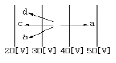
- a 방향
- b 방향
- c 방향
- d 방향
(정답률: 62%)
14. 다음의 MKS 유리화 단위와 CGS 단위에서 그 값이 일치하는 것은?
- 1 tesla = 10-4gauss
- 1 ampere = 0.1 emu
- 1 coulomb = 3×10-9esu
- 1 weber = 106 maxwell
(정답률: 40%)
15. 길이 ℓ[m]인 도체 ab가 속도 v[m/s]로 자계속을 운동할 때 도체에서는 a에서 b 방향으로 유도기전력이 생기게 된다. 이 때 속도와 자속밀도가 평행이 된다면 기전력은 얼마인가?
- 0
- 3.14
- v ℓ sinθ
- vB ℓ sinθ
(정답률: 52%)
16. 변압기 철심으로 주철을 사용하지 않고 규소강판이 사용되는 주된 이유는?
- 와류손을 적게 하기 위하여
- 큐리온도를 놓이기 위하여
- 히스테리시스손을 적게 하기 위하여
- 부하손(동손)을 적게 하기 위하여
(정답률: 79%)
17. 자유전자 e가 전계 E 중을 열에너지에 의해 진동하고 있는 원자와 충돌하면서 운동하는 경우 평균 자유시간을 τ 라 하면 도전율 σ는 얼마인가? (단, 자유전자의 밀도는 n, 질량은 m 이라 한다.)
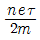
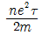
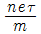
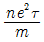
(정답률: 26%)
18. 비유전율이 3인 유전체내의 한 점의 전장이 3×105[V/m]일 때, 이 점의 분극의 세기는 몇 [C/m2]인가?
- 1.77×10-6
- 5.31×10-6
- 7.08×10-6
- 8.85×10-6
(정답률: 61%)
19. 그림과 같이 반지름 r[m]인 원의 임의의 2점 a,b(각 θ) 사이에 전류 I[A]가 흐른다. 원의 중심 0의 자계의 세기는 몇 [A/m]인가?
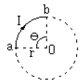
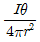
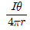
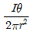
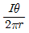
(정답률: 40%)
20. 철편의 ( )부분에 대한 극성의 설명으로 옳은 것은?
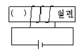
- N극이다.
- S극이다.
- N극과 S극이 교번한다.
- 자극이 생기지 않는다.
(정답률: 60%)
2과목: 전력공학
21. 페란티 효과의 발생 원인은?
- 선로의 저항
- 선로의 인덕턴스
- 선로의 정전용량
- 선로의 누설컨덕턴스
(정답률: 76%)
22. 3상3선식 소호리액터접지방식에서 1선의 대지정전용량을 C[μF] , 상전압 E[kV] , 주파수 f[Hz]라 하면, 소호리액터의 용량은 몇 [kVA]인가?
- πfCE2×10-3
- 2πfCE2×10-3
- 3πfCE2×10-3
- 6πfCE2×10-3
(정답률: 61%)
23. 전력용 퓨즈의 장점으로 틀린 것은?
- 소형으로 큰 차단용량을 갖는다.
- 밀폐형 퓨즈는 차단시에 소음이 없다.
- 가격이 싸고 유지 보수가 간단하다.
- 과도 전류에 의해 쉽게 용단되지 않는다.
(정답률: 68%)
24. 변전소 구내에서 보폭전압을 저감하기 위한 방법으로 잘못된 것은?
- 접지선을 얕게 매설한다.
- mesh식 접지방법을 채용하고 mesh 간격을 좁게 한다.
- 자갈 또는 콘크리트를 타설한다.
- 철구, 가대 등의 보조 접지를 한다.
(정답률: 60%)
25. 전선 a, b, c가 일직선으로 배치되어 있다. a와 b, b와 c 사이의 거리가 각각 5[m]일 때 이 선로의 등가선 간거리는 몇 [m]인가?
- 5
- 10
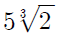
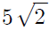
(정답률: 56%)
26. 전선로의 지지물 양쪽의 경간의 차가 큰 장소에 사용되며, 일명 E 철탑이라고도 하는 표준 철탑의 일종은?
- 직선형 철탑
- 내장형 철탑
- 각도형 철탑
- 인류형 철탑
(정답률: 77%)
27. 불평형 부하에서 역률은 어떻게 표현되는가?
- 각 상의 피상전력의 산술 합 / 유효전력
- 각 상의 피상전력의 벡터 합 / 유효전력
- 각 상의 피상전력의 산술 합 / 무효전력
- 각 상의 피상전력의 벡터 합 / 무효전력
(정답률: 67%)
28. 배전선의 전압조정 방법이 아닌 것은?
- 승압기 사용
- 유도전압조정기 사용
- 병렬콘덴서 사용
- 주상변압기 탭 전환
(정답률: 61%)
29. 화력발전소에서 1톤의 석탄으로 발생시킬 수 있는전력량은 약 몇 [kWh]인가? (단, 석탄 1[kg]의 뱔열량은 5,000[kcal] 효율은 20%이다.)
- 960
- 1,060
- 1,160
- 1,260
(정답률: 48%)
30. 충전전류는 일반적으로 어떤 전류를 말하는가?
- 앞선전류
- 뒤진전류
- 유효전류
- 누설전류
(정답률: 73%)
31. 역률개선용 콘덴서를 부하와 병렬로 연결할 때 Δ결선방법을 채택하는 이유로 가장 타당한 것은?
- 부하저항을 일정하게 유지할 수 있기 때문이다.
- 콘덴서의 정전용량[μF]의 소요가 적기 때문이다.
- 콘덴서의 관리가 용이하기 때문이다.
- 부하의 안정도가 높기 때문이다.
(정답률: 46%)
32. 후비보호계전방식의 설명으로 틀린 것은?
- 주보호계전기가 보호할 수 없을 경우 동작하며, 주보호계전기와 정정값은 동일하다.
- 주보호계전기가 그 어떤 이유로 정지해 있는 구간의 사고를 보호한다.
- 주보호계전기에 결함이 있어 정상 동작할 수 없는 상태에 있는 구간 사고를 보호한다.
- 송전선로에서 거리계전기의 후비보호계전기로 고장 선택 계전기를 많이 사용한다.
(정답률: 44%)
33. 케이블의 전력손실와 관계가 없는 것은?
- 도체의 저항손
- 유전체손
- 연피손
- 철손
(정답률: 59%)
34. 송전선로에 근접한 통신선에서 발생하는 유도장해에 관한 설명으로 틀린 것은?
- 정전유도의 원인은 전력선의 영상전압에 의해 발생한다.
- 전자유도의 원인은 전력선의 영상전류에 의해 발생한다.
- 유도장해를 억제하기 위하여 송전선에 충분한 연가를 한다.
- 유도되는 전압은 통신선의 길이에 비례한다.
(정답률: 53%)
35. 3상용 차단기의 정격차단용량은?
- 정격전압 x 정격차단전류
- 3 x 정격전압 x 정격전류
- 3 x 정격전압 x 정격차단전류
 x 정격전압 x 정격차단전류
x 정격전압 x 정격차단전류
(정답률: 75%)
36. 수력발전소의 댐(Dam)의 설계 및 저수지 용량 등을 결정하는데 사용되는 것은?
- 유량도
- 유황곡선
- 수위-유량곡선
- 적산유량곡선
(정답률: 67%)
37. 고압 배전선로의 보호방식에서 고장 전류의 차단방식이 아닌 것은?(오류 신고가 접수된 문제입니다. 반드시 정답과 해설을 확인하시기 바랍니다.)
- 퓨즈에 의한 보호방식
- 리클로저(recloser)에 의한 방식
- 섹셔널라이저(sectionalizer)에 의한 방식
- 자동부하 전환스위치(ALTS : auto load transfer switch)에 의한 방식
(정답률: 41%)
38. 장거리 대전력 송전에서 교류 송전방식에 비교한 직류 송전방식의 장점이 아닌 것은?
- 송전 효율이 놓다.
- 안정도의 문제가 없다.
- 선로 절연이 더 수월하다.
- 변압이 쉬워 고압송전이 유리하다.
(정답률: 55%)
39. 3,300[V] 배전선로의 전압을 6,600[V]로 승압하고 같은 손실율로 송전하는 경우 송전전력은 승압전의 몇 배 인가?
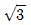
- 2
- 3
- 4
(정답률: 50%)
40. 그림과 같은 회로의 영상, 정상, 역상 임피던스 Z0, Z1, Z2 는?
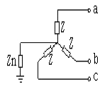
- Z0=Z+3Zn, Z1=Z2=Z
- Z0=3Z+Zn, Z1=3Z, Z2=Z
- Z0=3Zn, Z1=Z, Z2=3Z
- Z0=Z+Zn, Z1=Z2=Z+3Zn
(정답률: 34%)
3과목: 전기기기
41. 직류 전동기의 회전수는 자속이 감소하면 어떻게 되는가?
- 불변이다.
- 정지한다.
- 저하한다.
- 상승한다.
(정답률: 47%)
42. 200[V], 3상 유도 전동기의 전 부하 슬립이 4[%]이다. 공급전압이 10[%] 저하했을 때의 전 부하 슬립[%]은?
- 2
- 3
- 4
- 5
(정답률: 41%)
43. 다음에서 동기전동기와 구조가 동일한 것은?
- 직류전동기
- 유도전동기
- 정류자 전동기
- 교류발전기
(정답률: 31%)
44. 직류전동기 중 부하가 변하면 속도가 심하게 변하는 전동기는?
- 직류 분권전동기
- 직류 직권전동기
- 차동 복권전동기
- 가동 복권전동기
(정답률: 68%)
45. 60[Hz], 12극의 동기 전동기 회전 자계의 주변 속도는? (단, 회전 자계의 극 간격은 1[m]이다.)
- 31.4[m/s]
- 10[m/s]
- 377[m/s]
- 120[m/s]
(정답률: 39%)
46. 전기자 저항 0.3[Ω], 직권 계자 권선 저항 0.4[Ω]의 직권 전동기에 100[V]를 가하였더니 부하 전류가 8[A] 이었다. 이때 전동기의 속도 [rpm]는 약 얼마인가? (단, 기계 정수는 2.0이다.)
- 1000
- 1216
- 1316
- 1416
(정답률: 16%)
47. 권선비가 1:3인 전원 변압기를 통하여 100[V]의 교류 입력이 전파 정류되었을 때 출력 전압의 평균값[V]은?
- 약 300
- 약 270
- 약 45
- 약 38
(정답률: 47%)
48. 220[V], 3상, 4극, 60[Hz]인 3상 유도 전동기가 정격 전압 주파수에서 최대 회전력을 내는 슬립은 16[%]이다. 지금 200[V], 50[Hz]로 사용할 때의 최대 회전력 발생 슬립은 몇 [%]가 되는가?
- 16
- 18
- 19.2
- 21.3
(정답률: 40%)
49. 그림은 일반적인 반파 정류 회로이다. 변압기 2차 전압의 실효값을 E[V]라 할 때 직류 전류 평균값은? (단, 정류기의 전압강하는 무시한다.)
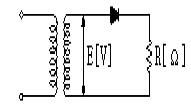
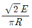
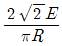
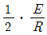
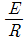
(정답률: 36%)
50. 전동기의 부하가 증가할 때 다음 설명 중 틀린 것은?
- 전동기의 속도가 떨어진다.
- 역기전력이 감소한다.
- 전동기의 전류가 증가한다.
- 전동기의 단자전압이 증가한다.
(정답률: 35%)
51. 변압기의 원리는?
- 전자유도 작용을 이용
- 정전유도 작용을 이용
- 자기유도 작용을 이용
- 플레밍의 오른손 법칙을 이용
(정답률: 58%)
52. 다음 중 변압기의 무 부하손에 해당 되지 않는 것은?
- 히스테리시스손
- 와류손
- 유전체손
- 표유부하손
(정답률: 48%)
53. 50[Hz] 12극의 3상 유도 전동기가 정격 정압으로 정격 출력 10[HP]를 발생하며 회전하고 있다. 이 때의 회전수는 약 몇 [rpm]인가? (단, 회전자 동손은 350[W], 회전자 입력은 출력과 회전자 동손과 합이다.)
- 468
- 478
- 485
- 500
(정답률: 49%)
54. 병렬운전을 하고 있는 두 대의 3상 동기 발전기 사이에 무효순환전류가 흐르는 것은 두 발전기의 기전력이 어떠할 때 인가?
- 기전력의 위상이 다를 때
- 기전력의 파형이 다를 때
- 기전력의 주파수가 다를 때
- 기전력의 크기가 다를 때
(정답률: 61%)
55. 다음 중 2 방향성 3 단자 사이리스터는 어느 것인가?
- TRIAC
- SCR
- SCS
- SSS
(정답률: 60%)
56. 부하시 전압 조정 변압기의 설명이 잘못된 것은?
- 부하전류를 끊지 않고 권수를 변환할 수 있는 변압기를 말한다.
- 전력 계통 사이에 무효전력 또는 유효전력을 자유이동시킬 수 있다.
- 전력계통의 전압 또는 부하부담을 희망하는 값으로 유지하기 위하여 사용된다.
- 부하시 신속하고 정확한 탭 변환 장치를 하나, 변환 용 보조 변압기를 시설할 필요가 없다.
(정답률: 54%)
57. 변압기의 기름으로서 갖추어야 할 조건은?
- 절연 내력이 작을 것
- 인화점이 낮고 응고점이 낮을 것
- 점도(粘度)가 낮을 것
- 비열이 작아야 할 것
(정답률: 61%)
58. 3상 유도 전동기의 토크와 출력을 설명하는 말 중 옳은 것은?
- 속도에 관계없다.
- 동일 속도에서 발생한다.
- 최대 출력은 최대 토크보다 고속도에서 발생한다.
- 최대 토크가 최대 출력보다 고속도에서 발생한다.
(정답률: 53%)
59. 전부하에서 동손 100[W], 철손 50[W]인 변압기가 최대효율을 나타내는 부하는?
- 50[%]
- 67[%]
- 70[%]
- 86[%]
(정답률: 53%)
60. 3상 동기 발전기의 3상이 유도 기전력 120[V], 반작용 리액턴스 0.2[Ω]이다. 90° 진상 전류 20[A]일 때의 발전기 단자 전압 [V]은? (단, 기타는 무시한다.)
- 116
- 120
- 124
- 140
(정답률: 42%)
4과목: 회로이론
61. 그림에서 저항 20[Ω]에 흐르는 전류는 몇 [A]인가?
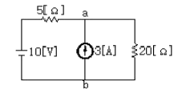
- 0.4
- 1
- 3
- 3.4
(정답률: 42%)
62. 두 코일이 있다. 한 코일의 전류가 매초 40[A]의 비율로 변화할 때 다른 코일에는 20[V]의 기전력이 발생하였다면 두 코일의 상호인덕턴스 [H]는?
- 0.2
- 0.5
- 0.8
- 1.0
(정답률: 65%)
63. 그림과 같은 회로의 전달함수는? (단, T=RC이다.)
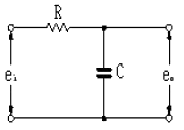
- Ts+1
- Ts2+1
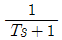
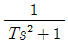
(정답률: 60%)
64. R-L-C 병렬회로에서 L 및 C의 값을 고정시켜 놓고 저항 R의 값만 큰 값으로 변화시킬 때 옳게 설명한 것은?
- 이 회로의 Q(선택도)는 커진다.
- 공진주파수는 커진다.
- 공진주파수는 변화한다.
- 공진주파수는 커지고, 선택도는 작아진다.
(정답률: 47%)
65. R=10[Ω], ωL=5[Ω],
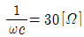
이 직렬로 접속된 회로에서 기본파에 대한 합성임피던스(Z1)과 제3조파에 대한 합성임피던스(Z3)는 각각 몇 [Ω]인가?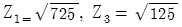
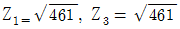
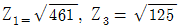
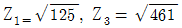
(정답률: 50%)
66. Δ결선된 저항부하를 Y결선으로 바꾸면 소비 전력은 어떻게 되겠는가? (단, 저항과 선간 전압은 일정하다.)
- 3배
- 9배
- 1/9배
- 1/3배
(정답률: 66%)
67. 인덕턴스 L 인 코일에 전류 i = lm sin ωt 가 흐르고 있다. L에 축적된 에너지의 첨두(Peak)값은?
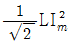
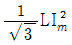
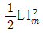
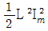
(정답률: 64%)
68. 3상 불평형 전압에서 역상 전압이 50[V]이고 정상전압이 200[V], 영상전압이 10[V]라고 할 때 전압의 불평형률은?
- 0.01
- 0.⑤
- 0.25
- 0.5
(정답률: 68%)
69. 그림과 같은 회로망에서 Z1을 4단자 정수에 의해 표시하면 어떻게 되는가?
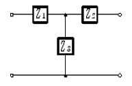
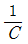
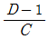
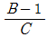
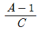
(정답률: 60%)
70.
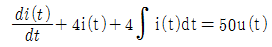
를 라플라스변환하여 i(t)전류 의 값을 구하면?- -50ε-2t
- -50ε2t
- 50tε2t
- 50tε-2t
(정답률: 52%)
71. 그림의 RL 직렬회로가 스위치를 닫은 상태에서 정상이었다. 스위치를 개방한 후 t=10-3[sec]일 때의 i[A]전류는?
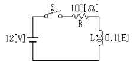
- 0.12
- 0.084
- 0.076
- 0.044
(정답률: 19%)
72. 4단자 정수 A, B, C, D 중에서 어드미턴스의 차원을 가진 정수는 어느 것인가?
- A
- B
- C
- D
(정답률: 63%)
73.
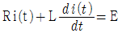
에서 모든 초기값을 0으로 하였을 때의 i(t)의 값은?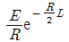
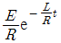
(정답률: 58%)
74. 그림과 같은 4단자망의 4단자 정수는?
(정답률: 60%)
75. R-L-C 직렬공진 회로에서 R=100[Ω], L=314[mH], C=125.6[pF]일 때, 선택도(전압 확대율) Q는?
- 2×103
- 3×103
- 4×102
- 5×102
(정답률: 38%)
76. 저항과 유도리액턴스의 직렬 회로에 E=14+j38[V]인 교류 전압을 가하니 I=6+j2[A]의 전류가 흐른다. 이 회로의 저항과 유도리액턴스는 얼마인가?
- R=4[Ω], XL=5[Ω]
- R=5[Ω], XL=4[Ω]
- R=6[Ω], XL=3[Ω]
- R=7[Ω], XL=2[Ω]
(정답률: 59%)
77. 대칭 3상 교류에서 순시값의 벡터 합은?
- 0
- 40
- 0.577
- 86.6
(정답률: 66%)
78. 다음 파형의 라플라스 변환은?
(정답률: 54%)
79. 일반적으로 대칭 3상 회로의 전압, 전류에 포함되는 전압, 전류의 고조파는 n을 임의의 정수로 하여 (3n+1)일 때의 상회전은 어떻게 되는가?
- 상회전은 기본파와 동일
- 각상 동위상
- 정지상태
- 상회전은 기본파와 반대
(정답률: 45%)
80. 데브낭(Thevenin)의 정리를 사용하여 그림(a)의 회로를 (b)와 같은 등가회로로 바꾸려 한다. V 와 R 의 값은?
- 7[V], 9.1[Ω]
- 10[V], 9.1[Ω]
- 7[V], 6.5[Ω]
- 10[V], 6.5[Ω]
(정답률: 64%)
5과목: 전기설비기술기준 및 판단 기준
81. 시가지의 도로상에 시설하는 가공 직류 전차선로의 구분 개폐기는 몇 [km] 이하마다 시설하여야 하는가?
- 1.5
- 2
- 2.5
- 4
(정답률: 56%)
82. 특별고압 가공전선로에서 양측의 경간의 차가 큰 곳에 사용하는 철탑의 종류는?
- 내장형
- 직선형
- 인류형
- 보강형
(정답률: 66%)
83. 전력보안 통신용 전화설비를 하지 않아도 되는 곳은?
- 원격감시제어가 되지 아니하는 발전소, 변전소
- 2 이상의 급전소 상호간과 이들을 총합 운용하는 급전소 간
- 급전소를 총합 운용하는 급전소로서, 서로 연계가 똑같은 전력계통에 속하는 급전소 간
- 동일 수계에 속하고 보안상 긴급연락의 필요가 있는 수력발전소 상호간
(정답률: 41%)
84. 금속관공사를 콘크리트에 매설하여 시행하는 경우 관의 두께는 몇 [mm]이상이어야 하는가?
- 1.0
- 1.2
- 1.4
- 1.6
(정답률: 62%)
85. 1 수용장소의 인입선에서 분기하여 지지물을 거치지 않고 다른 수용장소의 인입구에 이르는 부분의 전선을 무엇이라고 하는가?
- 가공인입선
- 지중인입선
- 연접인입선
- 옥측배선
(정답률: 68%)
86. 사용되는 전선이 반드시 절연전선이 아니라도 되는 배선 공사는?
- 합성수지관공사
- 금속관공사
- 버스덕트공사
- 플로어덕트공사
(정답률: 30%)
87. 옥내에 시설하는 저압전선으로 나전선을 절대로 사용하여서는 아니되는 것은?
- 애자사용공사에 의하여 전개된 곳에 전기로용 전선을 시설하는 경우
- 라이팅덕트공사에 의하여 시설하는 경우
- 버스덕트공사에 의하여 시설하는 경우
- 금속덕트공사에 의하여 시설하는 경우
(정답률: 60%)
88. 저압 가공전선이 다른 저압 가공전선과 접근상태로 시설되거나 교차하여 시설되는 경우에 저압 가공전선 상호간의 이격거리는 몇 [cm] 이상이어야 하는가? (단, 한 쪽의 전선이 고압절연전선이라고 한다.)
- 30
- 60
- 80
- 100
(정답률: 34%)
89. 지중 전선로에 사용되는 전선은?
- 절연전선
- 동복강선
- 케이블
- 나경동선
(정답률: 69%)
90. 특별고압 전로와 저압 전로를 결합하는 변압기 저압측의 중성점에 제2종 접지공사를 토지의 상황 때문에 변압기의 시설장소마다 하기 어려워서 가공접지선을 시설하려고 한다. 이 때 가공접지선으로 동복강선을 사용한다면 그 최소 굵기는 몇 [mm]인가?
- 3.2
- 3.5
- 4
- 5
(정답률: 21%)
91. 옥내에 시설하는 고압의 이동전선의 종류로 적합한 것은?
- 600볼트 비닐절연전선
- 비닐 캡타이어 케이블
- 600볼트 고무절연전선
- 고압용의 제3종 클로로프렌 캡타이어 케이블
(정답률: 56%)
92. 가공전선로의 지지물에 시설하는 지선으로 연선을 사용할 경우에는 소선이 최소 몇 가닥 이상이어야 하는가?
- 3
- 4
- 5
- 6
(정답률: 73%)
93. 특별고압 가공전선로의 지지물로 사용하는 철탑의 종류 중 인류형은?
- 전선로의 이완이 없도록 사용하는 것
- 지지물 양쪽 상호간을 이도를 주기 위하여 사용하는 것
- 풍압에 의한 하중을 인류하기 위하여 사용하는 것
- 전가섭선을 인류하는 곳에 사용하는 것
(정답률: 36%)
94. 최대사용전압이 23,000[V] 인 권선으로서 중성점 접지식 전로에 접속하는 변압기 전로의 절연내력을 시험할 때 시험되는 권선과 다른 권선, 철심 및 외함간에 연속하여 10분간 가하는 시험전압은 몇 [V]인가?(단, 중성점 접지식 전로는 중성선을 가지는 것으로서 그 중성선에 다중접지한다.)
- 21,160
- 25.300
- 28.750
- 34.500
(정답률: 49%)
95. 저압 옥내간선은 특별한 경우를 제외하고 다음 중 어느 것에 의하여 그 굵기가 결정되는가?
- 변압기 용량
- 전기방식
- 부하의 종류
- 허용전류
(정답률: 61%)
96. 발전소에는 필요한 계측장치를 시설하여야 한다. 다음 중 시설하지 않아도 되는 계측장치는?
- 발전기의 전압
- 주요 변압기의 역률
- 발전기의 고정자의 온도
- 특별고압용 변압기의 온도
(정답률: 48%)
97. 고압 가공전선에 케이블을 사용하는 경우의 조가용선 및 케이블의 피복에 사용하는 금속체에는 몇 종 접지공사를 하여야 하는가?(관련 규정 개정전 문제로 여기서는 기존 정답인 3번을 누르면 정답 처리됩니다. 자세한 내용은 해설을 참고하세요.)
- 제1종 접지공사
- 제2종 접지공사
- 제3종 접지공사
- 특별 제3종 접지공사
(정답률: 54%)
98. 특별고압 배전용변압기의 특별고압측에 반드시 시설하여야 하는 것은?
- 변성기 및 변류기
- 변류기 및 조상기
- 개폐기 및 리액터
- 개폐기 및 과전류차단기
(정답률: 63%)
99. “고압 또는 특별고압의 기계기구, 모선 등을 옥외에 시설하는 발전소, 변전소, 개폐소 또는 이에 준하는 곳에 시설하는 울타리, 담 등의 높이는 ( ① )[m] 이상으로 하고, 지표면과 울타리, 담 등의 하단사이의 간격은 ( ② ) [cm] 이하로 하여야 한다” 에서 ①, ②에알맞은 것은?
- ① 3 ② 15
- ① 2 ② 15
- ① 3 ② 25
- ① 2 ② 25
(정답률: 45%)
100. 제1종 또는 제2종 접지공사에 사용되는 접지선을 사람이 접촉할 우려가 있는 곳에 시설하는 경우로 잘못된 것은?
- 접지선으로 옥외용 비닐절연전선을 제외한 절연전선 또는 케이블을 사용하였다.
- 접지선을 시설한 지지물에 피뢰침용 지선을 시설하였다.
- 접지극은 지하 75[cm] 이상의 깊이에 매설하였다.
- 접지선의 지하 75[cm] 로부터 지표상 2[m] 까지의 부분은 합성수지관 등으로 덮었다.
(정답률: 39%)